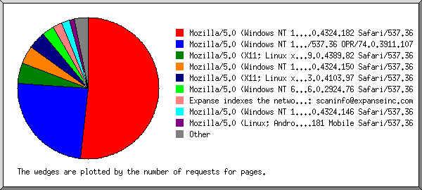

Web Server Statistics for test.mamakriau.com
Web Server Statistics for test.mamakriau.com
Program started on Sat, Mar 27 2021 at 7:52 PM.
Analyzed requests from Mon, Feb 15 2021 at 9:30 AM to Sat, Mar 27 2021 at 2:18 AM (39.70 days).
Web Server Statistics for test.mamakriau.comProgram started on Sat, Mar 27 2021 at 7:52 PM.
Analyzed requests from Mon, Feb 15 2021 at 9:30 AM to Sat, Mar 27 2021 at 2:18 AM (39.70 days).
(Go To: Top | General Summary | Monthly Report | Daily Summary | Hourly Summary | Domain Report | Organization Report | Redirected Referrer Report | Failed Referrer Report | Referring Site Report | Browser Report | Browser Summary | Operating System Report | Status Code Report | File Size Report | File Type Report | Directory Report | Request Report)
Figures in parentheses refer to the 7-day period ending Mar 27 2021 at 7:52 PM.
Successful requests: 1,034 (3)
Average successful requests per day: 26 (0)
Successful requests for pages: 471 (3)
Average successful requests for pages per day: 11 (0)
Failed requests: 145 (0)
Redirected requests: 69 (0)
Distinct files requested: 247 (322)
Distinct hosts served: 64 (69)
Data transferred: 30.15 megabytes (55.98 kilobytes)
Average data transferred per day: 777.69 kilobytes (8.00 kilobytes)
(Go To: Top | General Summary | Monthly Report | Daily Summary | Hourly Summary | Domain Report | Organization Report | Redirected Referrer Report | Failed Referrer Report | Referring Site Report | Browser Report | Browser Summary | Operating System Report | Status Code Report | File Size Report | File Type Report | Directory Report | Request Report)
Each unit ( ) represents 15 requests for pages or part thereof.
) represents 15 requests for pages or part thereof.
| month | #reqs | #pages | |
|---|---|---|---|
| Feb 2021 | 780 | 407 |    |
| Mar 2021 | 254 | 64 | |
Busiest month: Feb 2021 (407 requests for pages).
(Go To: Top | General Summary | Monthly Report | Daily Summary | Hourly Summary | Domain Report | Organization Report | Redirected Referrer Report | Failed Referrer Report | Referring Site Report | Browser Report | Browser Summary | Operating System Report | Status Code Report | File Size Report | File Type Report | Directory Report | Request Report)
Each unit () represents 10 requests for pages or part thereof.
| day | #reqs | #pages | |
|---|---|---|---|
| Sun | 199 | 25 |  |
| Mon | 72 | 28 | |
| Tue | 10 | 10 | |
| Wed | 6 | 6 | |
| Thu | 6 | 6 | |
| Fri | 10 | 10 | |
| Sat | 731 | 386 |  |
(Go To: Top | General Summary | Monthly Report | Daily Summary | Hourly Summary | Domain Report | Organization Report | Redirected Referrer Report | Failed Referrer Report | Referring Site Report | Browser Report | Browser Summary | Operating System Report | Status Code Report | File Size Report | File Type Report | Directory Report | Request Report)
Each unit () represents 3 requests for pages or part thereof.
| hour | #reqs | #pages | |
|---|---|---|---|
| 0 | 4 | 4 | |
| 1 | 4 | 4 | |
| 2 | 2 | 2 | |
| 3 | 1 | 1 | |
| 4 | 7 | 7 | |
| 5 | 6 | 6 | |
| 6 | 5 | 5 | |
| 7 | 6 | 6 | |
| 8 | 3 | 3 | |
| 9 | 39 | 17 | |
| 10 | 4 | 4 | |
| 11 | 6 | 6 | |
| 12 | 40 | 22 | |
| 13 | 59 | 8 | |
| 14 | 69 | 11 | |
| 15 | 15 | 4 | |
| 16 | 38 | 6 | |
| 17 | 54 | 6 | |
| 18 | 3 | 2 | |
| 19 | 183 | 114 | |
| 20 | 149 | 116 | |
| 21 | 43 | 18 | |
| 22 | 292 | 97 | |
| 23 | 2 | 2 | |
(Go To: Top | General Summary | Monthly Report | Daily Summary | Hourly Summary | Domain Report | Organization Report | Redirected Referrer Report | Failed Referrer Report | Referring Site Report | Browser Report | Browser Summary | Operating System Report | Status Code Report | File Size Report | File Type Report | Directory Report | Request Report)
Listing domains, sorted by the amount of traffic.
| #reqs | %bytes | domain |
|---|---|---|
| 1034 | 100% | [unresolved numerical addresses] |
(Go To: Top | General Summary | Monthly Report | Daily Summary | Hourly Summary | Domain Report | Organization Report | Redirected Referrer Report | Failed Referrer Report | Referring Site Report | Browser Report | Browser Summary | Operating System Report | Status Code Report | File Size Report | File Type Report | Directory Report | Request Report)
Listing the top 20 organizations by the number of requests, sorted by the number of requests.
| #reqs | %bytes | organization |
|---|---|---|
| 673 | 66.87% | 180.254 |
| 276 | 24.72% | 36 |
| 22 | 0.60% | 34 |
| 16 | 0.02% | 54 |
| 9 | 3.36% | 66.249 |
| 8 | 138.246 | |
| 3 | 52 | |
| 3 | 0.09% | 202.43 |
| 3 | 0.09% | 103 |
| 2 | 42 | |
| 2 | 0.08% | 66.96 |
| 2 | 0.01% | 92 |
| 2 | 110 | |
| 2 | 0.01% | 114 |
| 2 | 3.94% | 139.99 |
| 1 | 150.129 | |
| 1 | 180.163 | |
| 1 | 13 | |
| 1 | 35 | |
| 1 | 18 | |
| 4 | 0.21% | [not listed: 4 organizations] |
(Go To: Top | General Summary | Monthly Report | Daily Summary | Hourly Summary | Domain Report | Organization Report | Redirected Referrer Report | Failed Referrer Report | Referring Site Report | Browser Report | Browser Summary | Operating System Report | Status Code Report | File Size Report | File Type Report | Directory Report | Request Report)
Listing referring URLs, sorted by the number of redirected requests.
(Go To: Top | General Summary | Monthly Report | Daily Summary | Hourly Summary | Domain Report | Organization Report | Redirected Referrer Report | Failed Referrer Report | Referring Site Report | Browser Report | Browser Summary | Operating System Report | Status Code Report | File Size Report | File Type Report | Directory Report | Request Report)
Listing referring URLs, sorted by the number of failed requests.
(Go To: Top | General Summary | Monthly Report | Daily Summary | Hourly Summary | Domain Report | Organization Report | Redirected Referrer Report | Failed Referrer Report | Referring Site Report | Browser Report | Browser Summary | Operating System Report | Status Code Report | File Size Report | File Type Report | Directory Report | Request Report)
Listing referring sites, sorted by the number of requests.
| #reqs | site |
|---|---|
| 500 | https://test.mamakriau.com/ |
| 13 | http://test.mamakriau.com/ |
| 2 | http://www.test.mamakriau.com/ |
| 2 | http://baidu.com/ |
(Go To: Top | General Summary | Monthly Report | Daily Summary | Hourly Summary | Domain Report | Organization Report | Redirected Referrer Report | Failed Referrer Report | Referring Site Report | Browser Report | Browser Summary | Operating System Report | Status Code Report | File Size Report | File Type Report | Directory Report | Request Report)

Listing browsers with at least 1 request for a page, sorted by the number of requests for pages.
| #reqs | #pages | browser |
|---|---|---|
| 447 | 244 | Mozilla/5.0 (Windows NT 10.0; Win64; x64) AppleWebKit/537.36 (KHTML, like Gecko) Chrome/88.0.4324.182 Safari/537.36 |
| 210 | 115 | Mozilla/5.0 (Windows NT 10.0; Win64; x64) AppleWebKit/537.36 (KHTML, like Gecko) Chrome/88.0.4324.150 Safari/537.36 OPR/74.0.3911.107 |
| 212 | 22 | Mozilla/5.0 (X11; Linux x86_64) AppleWebKit/537.36 (KHTML, like Gecko) Chrome/89.0.4389.82 Safari/537.36 |
| 64 | 20 | Mozilla/5.0 (Windows NT 10.0; Win64; x64) AppleWebKit/537.36 (KHTML, like Gecko) Chrome/88.0.4324.150 Safari/537.36 |
| 19 | 19 | Mozilla/5.0 (X11; Linux x86_64) AppleWebKit/537.36 (KHTML, like Gecko) HeadlessChrome/83.0.4103.97 Safari/537.36 |
| 13 | 13 | Mozilla/5.0 (Windows NT 6.1; WOW64) AppleWebKit/537.36 (KHTML, like Gecko) Chrome/56.0.2924.76 Safari/537.36 |
| 10 | 10 | Expanse indexes the network perimeters of our customers. If you have any questions or concerns, please reach out to: scaninfo@expanseinc.com |
| 8 | 8 | Mozilla/5.0 (Windows NT 10.0; Win64; x64) AppleWebKit/537.36 (KHTML, like Gecko) Chrome/88.0.4324.146 Safari/537.36 |
| 5 | 5 | Mozilla/5.0 (Linux; Android 10; CPH1931) AppleWebKit/537.36 (KHTML, like Gecko) Chrome/88.0.4324.181 Mobile Safari/537.36 |
| 3 | 3 | Mozilla/5.0 (Linux; U; Android 8.1.0; zh-CN; EML-AL00 Build/HUAWEIEML-AL00) AppleWebKit/537.36 (KHTML, like Gecko) Version/4.0 Chrome/57.0.2987.108 baidu.sogo.uc.UCBrowser/11.9.4.974 UWS/2.13.1.48 Mobile Safari/537.36 AliApp(DingTalk/4.5.11) com.alibaba.android.rimet/10487439 Channel/227200 language/zh-CN |
| 2 | 2 | Softaculous |
| 2 | 2 | NetSystemsResearch studies the availability of various services across the internet. Our website is netsystemsresearch.com |
| 2 | 2 | Mozilla/5.0 (compatible; TestBot/0.1; +In_the_test_phase,_if_the_spider_brings_you_trouble,_please_add_our_IP_to_the_blacklist._Thank_you.) |
| 1 | 1 | Mozilla/5.0 (Windows NT 10.0; Win64; x64) AppleWebKit/537.36 (KHTML, like Gecko) Chrome/88.0.4324.190 Safari/537.36 |
| 1 | 1 | Mozilla/5.0 (iPhone; CPU iPhone OS 11_0 like Mac OS X) AppleWebKit/604.1.38 (KHTML, like Gecko) Version/11.0 Mobile/15A372 Safari/604.1 |
| 9 | 1 | Mozilla/5.0 (Linux; Android 10; CPH1937) AppleWebKit/537.36 (KHTML, like Gecko) Chrome/88.0.4324.181 Mobile Safari/537.36 |
| 1 | 1 | Mozilla/5.0 (Windows NT 10.0; Win64; x64; rv:67.0) Gecko/20100101 Firefox/67.0 |
| 1 | 1 | Mozilla/5.0 (Linux; Android 8.1.0; vivo 1817) AppleWebKit/537.36 (KHTML, like Gecko) Chrome/88.0.4324.152 Mobile Safari/537.36 |
| 1 | 1 | Mozilla/5.0 (Windows NT 10.0; Win64; x64) AppleWebKit/537.36 (KHTML, like Gecko) Chrome/74.0.3729.131 Safari/537.36 |
| 23 | 0 | [not listed: 8 browsers] |
(Go To: Top | General Summary | Monthly Report | Daily Summary | Hourly Summary | Domain Report | Organization Report | Redirected Referrer Report | Failed Referrer Report | Referring Site Report | Browser Report | Browser Summary | Operating System Report | Status Code Report | File Size Report | File Type Report | Directory Report | Request Report)
Listing browsers with at least 1 request for a page, sorted by the number of requests for pages.
| # | #reqs | #pages | browser |
|---|---|---|---|
| 1 | 1008 | 454 | Safari |
| 1007 | 453 | Safari/537 | |
| 1 | 1 | Safari/604 | |
| 2 | 10 | 10 | Expanse indexes the network perimeters of our customers. If you have any questions or concerns, please reach out to: scaninfo@expanseinc.com |
| 3 | 2 | 2 | NetSystemsResearch studies the availability of various services across the internet. Our website is netsystemsresearch.com |
| 4 | 2 | 2 | Netscape (compatible) |
| 5 | 2 | 2 | Softaculous |
| 6 | 10 | 1 | Firefox |
| 1 | 1 | Firefox/67 |
(Go To: Top | General Summary | Monthly Report | Daily Summary | Hourly Summary | Domain Report | Organization Report | Redirected Referrer Report | Failed Referrer Report | Referring Site Report | Browser Report | Browser Summary | Operating System Report | Status Code Report | File Size Report | File Type Report | Directory Report | Request Report)
Listing operating systems, sorted by the number of requests for pages.
| # | #reqs | #pages | OS |
|---|---|---|---|
| 1 | 768 | 403 | Windows |
| 742 | 390 | Windows NT | |
| 17 | 13 | Unknown Windows | |
| 9 | 0 | Windows XP | |
| 2 | 249 | 51 | Unix |
| 249 | 51 | Linux | |
| 3 | 14 | 14 | OS unknown |
| 4 | 2 | 2 | Known robots |
| 5 | 1 | 1 | Macintosh |
(Go To: Top | General Summary | Monthly Report | Daily Summary | Hourly Summary | Domain Report | Organization Report | Redirected Referrer Report | Failed Referrer Report | Referring Site Report | Browser Report | Browser Summary | Operating System Report | Status Code Report | File Size Report | File Type Report | Directory Report | Request Report)
Listing status codes, sorted numerically.
| #reqs | status code |
|---|---|
| 1034 | 200 OK |
| 1 | 301 Document moved permanently |
| 16 | 302 Document found elsewhere |
| 37 | 303 See other document |
| 15 | 307 Document moved temporarily |
| 5 | 403 Access forbidden |
| 129 | 404 Document not found |
| 11 | 500 Internal server error |
(Go To: Top | General Summary | Monthly Report | Daily Summary | Hourly Summary | Domain Report | Organization Report | Redirected Referrer Report | Failed Referrer Report | Referring Site Report | Browser Report | Browser Summary | Operating System Report | Status Code Report | File Size Report | File Type Report | Directory Report | Request Report)
| size | #reqs | %bytes |
|---|---|---|
| 0 | 37 | |
| 1B- 10B | 0 | |
| 11B- 100B | 10 | |
| 101B- 1kB | 433 | 0.84% |
| 1kB- 10kB | 388 | 3.68% |
| 10kB-100kB | 111 | 13.16% |
| 100kB- 1MB | 55 | 82.32% |
(Go To: Top | General Summary | Monthly Report | Daily Summary | Hourly Summary | Domain Report | Organization Report | Redirected Referrer Report | Failed Referrer Report | Referring Site Report | Browser Report | Browser Summary | Operating System Report | Status Code Report | File Size Report | File Type Report | Directory Report | Request Report)
Listing extensions with at least 0.1% of the traffic, sorted by the amount of traffic.
| #reqs | %bytes | extension |
|---|---|---|
| 30 | 51.45% | .map |
| 47 | 14.23% | .jpg [JPEG graphics] |
| 5 | 12.56% | .gif [GIF graphics] |
| 106 | 7.72% | .js [JavaScript code] |
| 463 | 7.61% | [directories] |
| 92 | 3.04% | .png [PNG graphics] |
| 82 | 1.60% | .css [Cascading Style Sheets] |
| 5 | 0.64% | .woff |
| 2 | 0.49% | .woff2 |
| 136 | 0.36% | [no extension] |
| 3 | 0.12% | .ico |
| 8 | 0.10% | .html [Hypertext Markup Language] |
| 55 | 0.08% | [not listed: 2 extensions] |
(Go To: Top | General Summary | Monthly Report | Daily Summary | Hourly Summary | Domain Report | Organization Report | Redirected Referrer Report | Failed Referrer Report | Referring Site Report | Browser Report | Browser Summary | Operating System Report | Status Code Report | File Size Report | File Type Report | Directory Report | Request Report)
Listing directories with at least 0.01% of the traffic, sorted by the amount of traffic.
| #reqs | %bytes | directory |
|---|---|---|
| 260 | 80.88% | /assets/ |
| 658 | 8.24% | [root directory] |
| 42 | 7.77% | /static/ |
| 60 | 2.60% | /admin/ |
| 6 | 0.41% | /bootstrap/ |
| 2 | 0.05% | /css/ |
| 1 | 0.02% | /js/ |
| 5 | 0.02% | /user/ |
(Go To: Top | General Summary | Monthly Report | Daily Summary | Hourly Summary | Domain Report | Organization Report | Redirected Referrer Report | Failed Referrer Report | Referring Site Report | Browser Report | Browser Summary | Operating System Report | Status Code Report | File Size Report | File Type Report | Directory Report | Request Report)
Listing files with at least 20 requests, sorted by the number of requests.
| #reqs | %bytes | last time | file |
|---|---|---|---|
| 462 | 7.60% | Mar/27/21 2:18 AM | / |
| 17 | 0.61% | Mar/27/21 2:18 AM | /?34.77.162.17 |
| 17 | 0.01% | Feb/15/21 4:14 PM | /?/Api/ |
| 131 | 0.35% | Feb/20/21 10:34 PM | /register |
| 31 | 0.06% | Feb/20/21 10:11 PM | /signup.php |
| 30 | 51.45% | Feb/20/21 2:17 PM | /assets/bootstrap/css/bootstrap.min.css.map |
| 380 | 40.54% | Mar/14/21 10:54 PM | [not listed: 237 files] |
{kind=link}